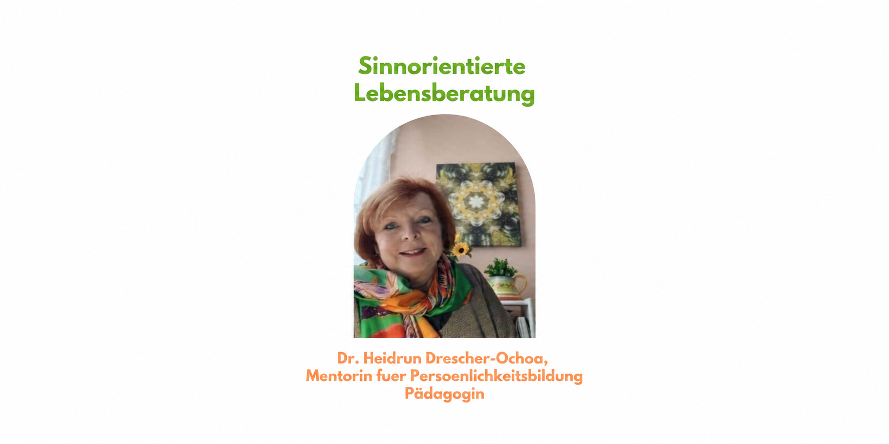
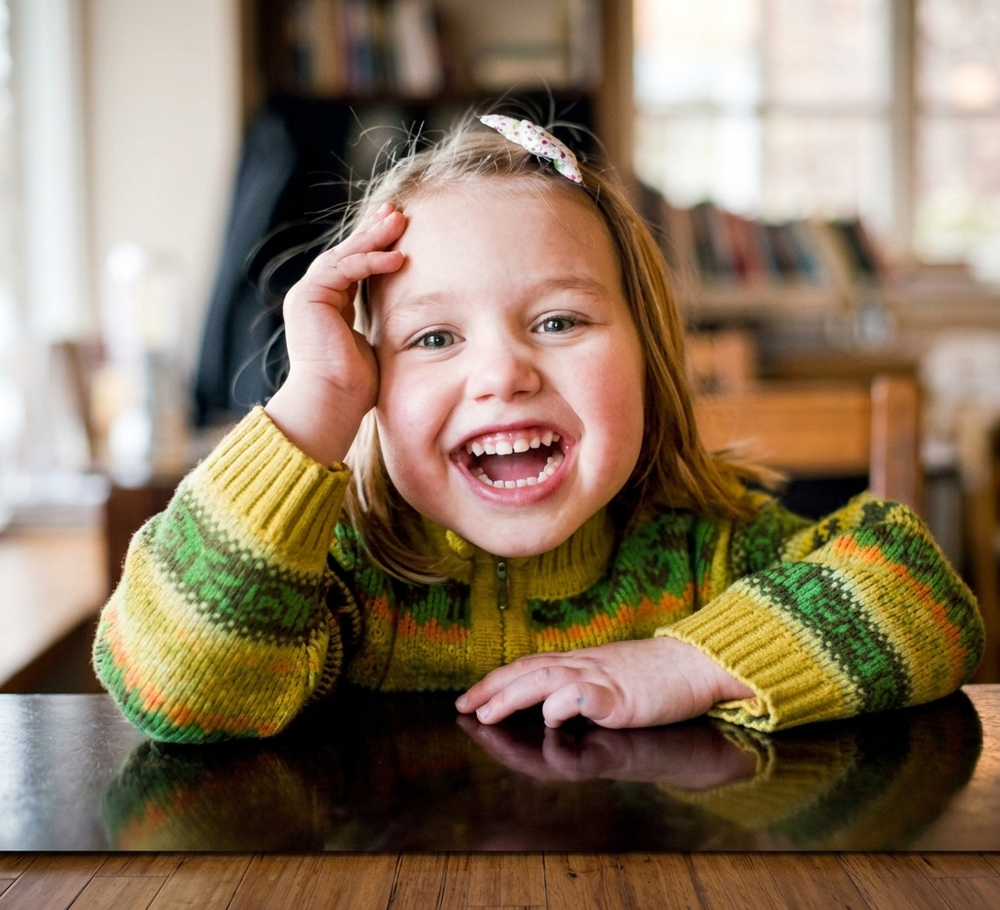

Dr. phil. Heidrun Drescher-Ochoa M.A. ist Pädagogin, Autorin und Mentorin mit den Schwerpunkten Holistische Pädagogik, Logotherapie und Enneagramm.
Sie studierte Germanistik, Romanistik und Politikwissenschaft, unterrichtete an Waldorf-, Montessori- und staatlichen Hoch-Schulen in Deutschland, Argentinien und Spanien und ist Mentorin für Logotherapie und Existenzanalyse.
Ihr Kernanliegen:
Sie steht für Selbsterkenntnis und Potenzialentfaltung als Fundament von Bildung. Mit biografischer Arbeit und der Logotherapie Viktor Frankls begleitet sie Menschen dabei, ihren Sinn im Leben und beim Lernen zu entdecken.
Netzwerk HOLLA: Sie leitet das Netzwerk Holistische Pädagogik (HOLLA), das Fortbildungen für Eltern und Lernbegleiter anbietet, um achtsame Lernumgebungen zu gestalten und den Wandel von einer Defizit- zu einer Potenzialkultur zu ermöglichen. (https://www.holistischepaedagogik.de)
HOLLA · HALTUNG, BEZIEHUNG UND POTENZIAL
Halt finden.
Sinn eröffnen.
Für eine existenzielle, ganzheitliche Bildung.
Wir müssen nur die Blickrichtung ändern: Eine achtsame Bildungskultur mit Schwarmintelligenz statt Lehrplan ist möglich.
Vom Lehrplan zum Lebensplan.
Vom Belehren zum Begleiten.
Von der Konkurrenz zur Schwarmintelligenz.
SELBSTKENNTNIS
Unser Navi für das Leben.
Selbstkenntnis ist unser Navi. Damit sitzen wir wieder selbst am Steuer, geben die Richtung selbst ein – und entdecken, wozu diese Reise dient.
Denn nur wer selbst Halt hat, kann Halt geben. Nur wer Sinn erfährt, kann Sinnräume für Kinder öffnen.
ACHTSAME PRÄSENZ
Das Kind sehen. Das Leben begleiten.
Die Haltung des Lernbegleiters lebt aus dem Frageimpuls: „Was braucht dieses Kind jetzt von mir, damit es sein Leben gut und sinnstiftend bewältigen kann?“
Wie wäre es, wenn nicht die Schule, sondern das Leben bildet? Nicht mit ‚Pädagogen‘ im alten Sinne von Paidos + agogos = den Knaben führen. Das haben wir probiert. Wir brauchen Biagogen: Bios + agogos – zum Leben führen. Menschen, die nicht Leistung benoten, sondern Person sehen. Die das Leben selbst zum Lehrer machen.

GELEBTE SCHWARMINTELLIGENZ
Gemeinsam entdecken. Im Dialog lernen.
In einer Lernkultur gelebter Schwarmintelligenz weiß nicht einer, was für alle gut ist. Die Gemeinschaft entdeckt gemeinsam. Fehler werden nicht bestraft, sondern im Dialog genutzt. Jeder wird gehört. Wir leben eine fehlerfreundliche, dialogische Lernkultur.
ENTWICKLUNG STATT PERFEKTION
Schritt für Schritt besser werden.
Wie? Mit den Grundmotivationen nach Waibel als Kompass für die Beziehung – was braucht dieses Kind jetzt von mir?
Woraus? Aus einer Kaizen-Haltung: Wir wollen nicht perfekt sein, wir wollen Schritt für Schritt besser werden – mit positiver Fehlerkultur und indem wir uns gemäß den Prinzipien eines achtsamen Systems ständig selbst evaluieren.
Was brauchen wir dafür?
- Achtsame Präsenz des Lernbegleiters.
- Selbstkenntnis: Nur wer selbst Halt hat, kann Halt geben. Nur wer Sinn erfährt, kann Sinnräume für Kinder öffnen.
- Eine fehlerfreundliche, dialogische Lernkultur – mit den Grundmotivationen der Existenziellen Pädagogik als Beziehungskompass, einer Kaizen-Haltung und achtsamen Organisationsprinzipien.
„Hier habe ich Halt. Ich habe Raum. Ich darf ‚Ich‘ sein. Wenn ich Sinn sehe in dem, was ich tue, wird Lernen zu Leben.“
Dafür steht die HOLLA, die den Menschen ganzheitlich sieht. Für sie gilt: Person vor Programm, Haltung vor Methode, Beziehung vor Technik. Sie will Kopf, Herz, Hand und Seele verbinden, Lerngemeinschaften als Achtsamkeitsräume gestalten, in denen junge Menschen ihre Potenziale entfalten können.
Daher ist es kein Zufall, sondern Konsequenz, dass die HOLLA assoziiertes Mitglied beim Viktor Frankl Institut Wien und bei der „Existenziellen Pädagogik“ sowie der GLE (Gesellschaft für Logotherapie und Existenzanalyse) ist, weil wir für den Menschen als Person in Freiheit und Verantwortung eintreten, und zwar für eine Bildung, die sinnerfülltes Lernen möglich macht.
QUALITÄTSKRITERIEN + ERWEITERTER BILDUNGSBEGRIFF
Drei Dimensionen.
Eine Bildungsgemeinschaft.
Junge Menschen, Eltern und Lernbegleiter bilden gemeinsam den Raum, in dem Bildung entsteht.
personal
ethisch
systemisch
Die drei Dimensionen sind miteinander verbunden. Der Kreis steht für die Bildungsgemeinschaft – alle Beteiligten haben ihren Platz innerhalb dieses gemeinsamen Raums.
Vom Blick auf Defizite
zum Vertrauen in Potenziale.
GEDANKEN, DIE ETWAS BEWEGEN
Frische Impulse.
Offene Horizonte.
Über Lernen, Leben und die Kunst,
den Menschen als Ganzes zu sehen.
DIE BIBLIOTHEK
Bücher für neue
Perspektiven.
Alle Bücher und wissenschaftlichen Publikationen
von Heidrun Drescher-Ochoa an einem Ort.
Deine Merkliste wird nur in diesem Browser gespeichert.
GEMEINSAM WEITERDENKEN
Aus einem Ich
wird ein Wir.
Mit HOLLA – dem Netzwerk Holistische Pädagogik – möchten wir Eltern und Lernbegleiter stärken. Für eine humane Schulentwicklung, in der Achtsamkeit, Selbsterkenntnis und das individuelle Potenzial ihren Platz finden.
Unser Lesekreis: „Wie Holistische Pädagogik in die Schule kommt!“
Zum Lesekreis anfragenJEDER NEUE WEG BEGINNT MIT EINEM GESPRÄCH
Was bewegt dich?
drescher-ochoa@gmx.deSelbsterkenntnis · Potenzialentfaltung · Humane Bildung